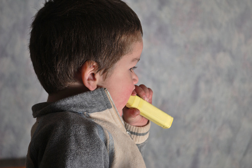

Pica
What is pica?
Pica is an eating disorder in which you eat items of no nutritional value that are not typically viewed as food. This might happen as a result of a nutrient deficiency — your body’s way of telling you that it needs more of a certain nutrient. Anyone can experience pica, but it’s more common during pregnancy and childhood.
The cultural perception of the items you eat matters. For example, eating clay is a cultural practice for some groups of people in the world. For people in these groups, the consumption of clay would not be seen as evidence of pica because it makes sense given certain customs and traditions.
However, if the consumption of “inedible” substances persists for over a month, and there’s no cultural reason behind these eating habits, then it’s likely you are experiencing pica.
Risk Factors associated with Pica
Healthcare professionals most commonly diagnose pica during pregnancy or childhood, according to researchTrusted Source. Pica often occurs with certain mental health conditions that affect a person’s thinking and behaviors. These include:
- Autism Spectrum Disorder
- Schizophrenia
- Obsessive Compulsive Disorder
- Iron Deficiency
- Are Malnourished
Symptoms of Pica
Typically, pica refers to eating nonfood items for at least 1 month.
Eating nonfood items as a result of pica can lead to various digestive symptoms, such as:
- stomach pain
- constipation or diarrhea
- deficiencies, such as anemia
- intestinal blockages
- side effects from eating toxic substances, such as the lead in paint
You might show symptoms of pica if you’re regularly consuming any of the following items:
- chalk
- dirt
- paint
- soap
- cloth
- hair
- wool
- string
- soil
- talcum powder
Pica in children
Pica is more common in children than adults. A 2018 study surveyed 1,430 schoolchildren in Switzerland, finding that more than 10%Trusted Source of children might experience pica at some point.
It’s important to note that mouthing objects is commonplace in certain developmental stages of life, typically before the age of 2. Taking this into account, healthcare professionals don’t typically diagnose pica in children under this age.
Treatment of Pica
Treatments for eating disorders can differ.
To treat pica, a doctor may first try to address any health complications resulting from eating nonfood items. For example, ingesting paint can lead to lead poisoning. This health consequence would need immediate attention, and your doctor might prescribe chelation therapy.
If your doctor thinks your pica is caused by nutrient imbalances, they may prescribe vitamin or mineral supplements.